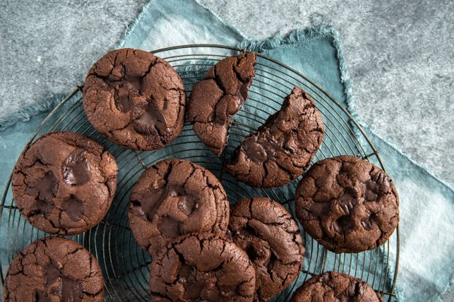

Giant double chocolate chip cookies

Description
Not for the faint of heart, this is the ultimate cookie recipe. Insanely chocolatey,
insanely decadent, insanely delicious. You can thank us later.
Ingredients
- 240g unsalted butter, at room temperature
- 265g (1 1/4 cups) caster sugar
- 100g (1/2 cup, firmly packed) brown sugar
- 2 eggs
- 340g (2 1/4 cups) plain flour
- 90g (3/4 cup) cocoa powder
- 2 tbsp corn flour
- 1 tsp sea salt
- 1 1/4 tsp bicarbonate of soda
- 200g dark chocolate, coarsely chopped
- 2 tsp Queen Concentrated Vanilla Extract
Steps
- Preheat the oven to 190C/170C fan forced. Line 2 baking trays with baking paper.
- Use electric beaters to beat the butter, caster sugar, brown sugar and Queen Concentrated Vanilla Extract in a large bowl for 3-4 minutes or until pale and creamy.
Add the eggs, one at a time, beating well after each addition. Beat for a further 2 minutes or until well combined.
- Sift the flour, cocoa powder, corn flour, salt and bicarb into a large bowl. Add to the butter mixture. Stir until just combined. Fold through the chocolate.
- Roll the dough into fourteen 95g balls. Arrange on the baking trays. Bake 1 tray for 12-14 minutes or until lightly golden. Set aside, on tray, to cool slightly before
transferring to a wire rack to cool completely. Repeat with remaining tray.